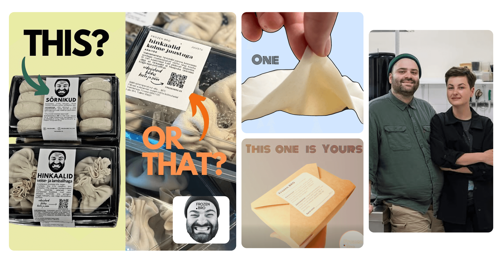
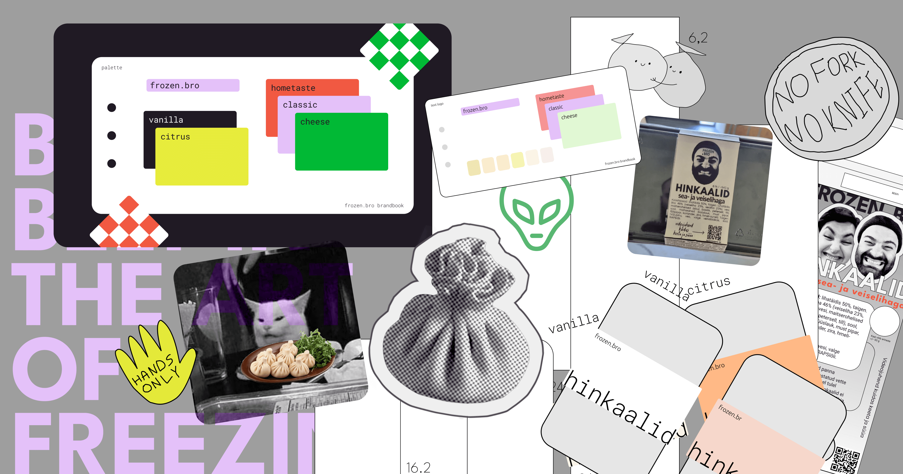
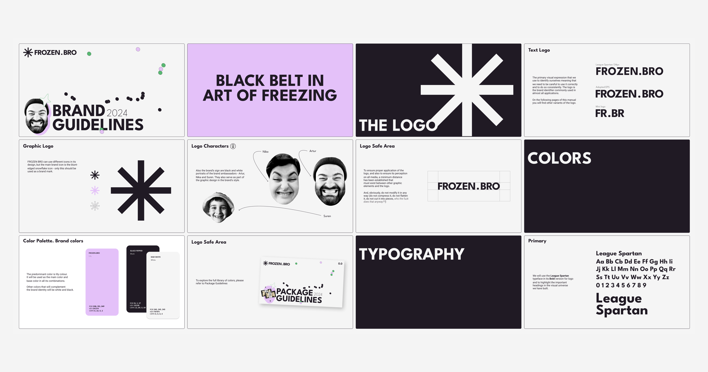
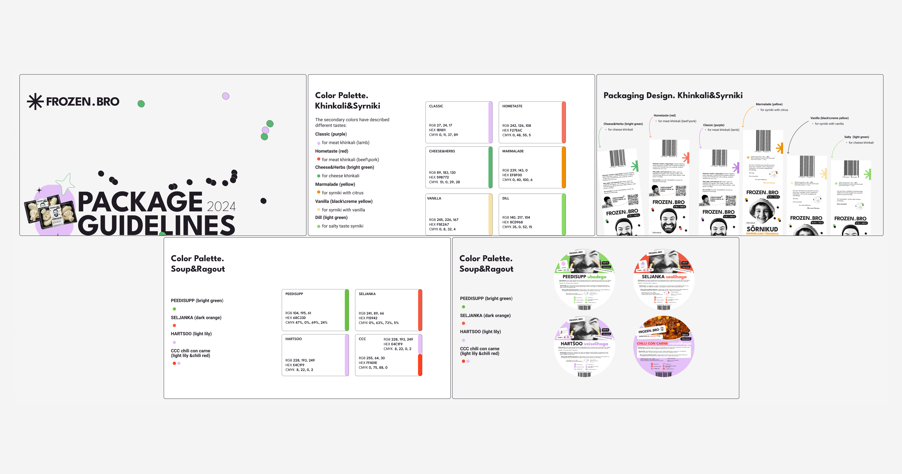
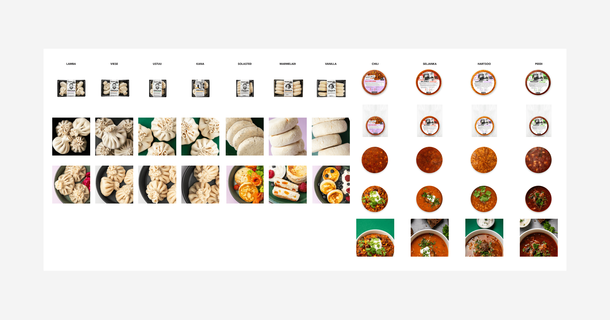
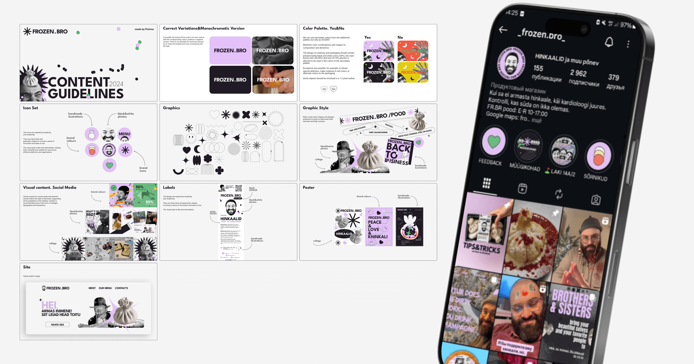

ESTONIA\FROZEN.BRO
BRAND IDENTITY&PACKAGING
Project Context
Frozen Bro reached out to me in 2023 for a systematic branding project. They already
had a frozen product line and basic communications, and the team’s vibe was
instantly clear: lively, creative, and genuinely funny. The brand already felt human
and warm. At the same time, the packaging and supporting materials were produced in
different ways: some layouts were printed at home, and many decisions were made case
by case depending on the task.
Early visuals by the founders:

process
We started with briefing and deep context work. On the strategic side, we defined
what Frozen Bro is selling, how the lineup is structured, who the customer is, and
where people meet the brand. A key intention was to support their own style and
taste in design and messaging, and to keep their tone of voice intact: warm,
friendly, and human, like good friends or neighbors, the kind of people you can meet
through everyday life and end up sharing a good table and a fun evening with.
Early visuals by the founders:

Three guides
The project was structured into three blocks so the brand could immediately function
as a practical tool.
Base branding and guideline
We built the foundation of the brand system, with a stronger emphasis on
communication and tone of voice. Frozen Bro has a focused, niche audience, and the
founders meet people in person at festivals and events, so the way the brand speaks
matters as much as how it looks. At this stage, the priority was to define a clear,
human voice for everyday conversations and content: approachable, recognizable, and
consistent across touchpoints.
Part of Base Brandbook:

Packaging guideline
This was the most practical part of the project. For the frozen product line, we
designed belly bands for the packaging as well as additional stickers. The goal was
to strengthen shelf presence and standardize the look of the lineup.
Part of Package Brandbook:

One of the brand’s most recognizable signatures is the “logo” itself: a real face,
used as a bold and memorable marker across touchpoints. We leaned into that idea and
made it a repeating motif in the packaging system, so the lineup stays instantly
identifiable even when formats, flavors, or product types change. Instead of
following the typical frozen-food visual codes, we chose a minimal, distinctive
direction that feels true to Frozen Bro and stands apart from competitors. Alongside
the design work, we organized food photoshoots, handled retouching, and prepared a
consistent set of visual assets for packaging and content production.
Food Photo and Retouche:

Social media guideline
Frozen Bro is constantly filming and sharing what they do: day-to-day kitchen life,
work process, product moments, and real meetings with people around food. The brand
system was built to support that rhythm, so it integrates naturally with short
videos, posts, stories, and quick announcements without losing consistency. We
documented the rules and templates in a clear, practical way, so the team can
produce and format their own creatives independently. This removed the need to hire
a designer for every post and helped them keep the channel active, recognizable, and
true to their voice.
Part of Content (SM) Brandbook:

Site
Alongside social media, we built a website on WordPress so the team could update it
independently without relying on a developer. We designed and laid out the full site
structure and page templates, then we populated it with the key content and set up
the essentials for day-to-day use. A shop module was connected so products could be
added, edited, and managed in one place.
Each product page was designed as a clear, practical “card”: ingredients, cooking
instructions, and supporting details. Where it made sense, we added rich content
such as photos, short videos showing how to cook the product, and structured blocks
for FAQs or storage tips. The result is a site that works both as a storefront and
as a simple guide for customers, while staying easy for the team to maintain.
Site frozenbro.ee